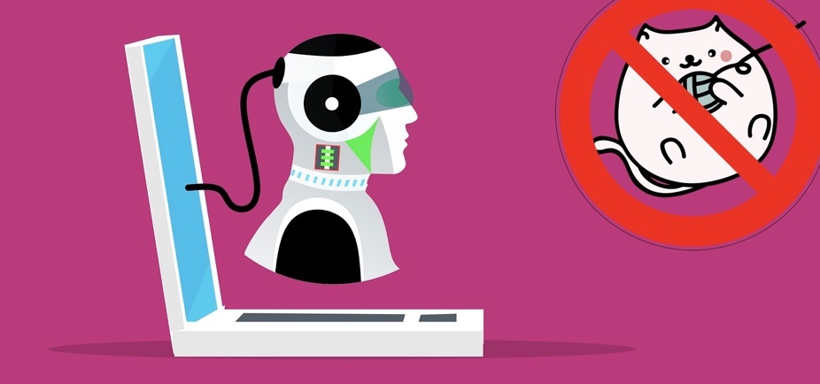
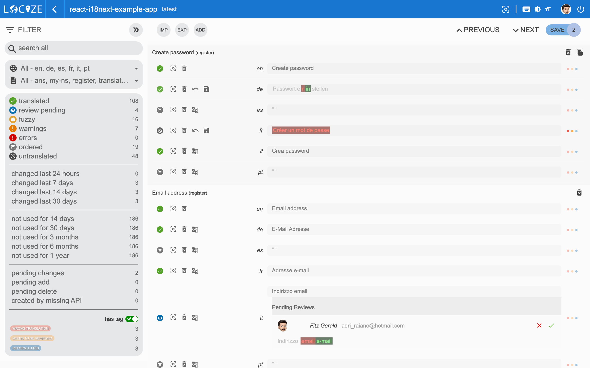
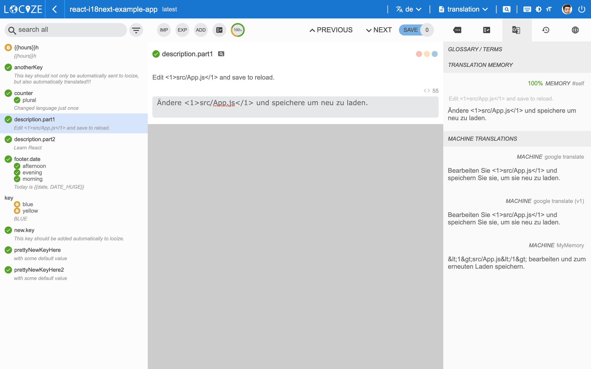
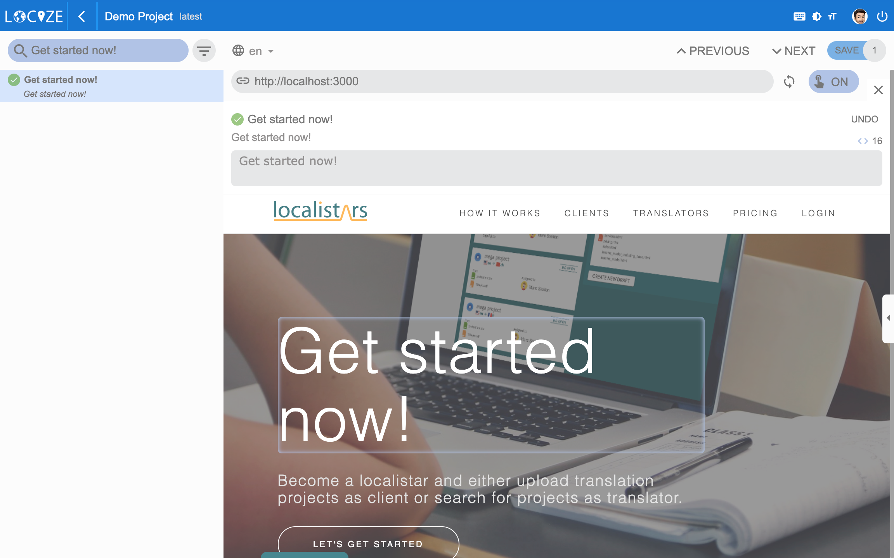

Willkommen in der Welt der CAT-Tools, der computergestützten Übersetzungssoftware!
Inhaltsverzeichnis
- Was sind CAT-Tools?
- Was können computergestützte Übersetzungstools?
- Vorteile der Verwendung von CAT-Tools für die Übersetzung
- Locize CAT
- TMS und CAT-Tools, was ist der Unterschied?
- Auswahl des richtigen CAT-Tools: ein Leitfaden für den Käufer
- Schlussfolgerung
Was sind CAT-Tools?
Diese praktischen kleinen Programme sind wie ein persönlicher Übersetzer in Ihrer Tasche (oder auf Ihrem Computer, je nachdem, was Sie bevorzugen).
Aber was genau ist ein CAT, fragen Sie sich? Nun, es ist so ziemlich genau das, wonach es sich anhört. Es handelt sich um eine Software, die Ihnen hilft, Text von einer Sprache in eine andere zu übersetzen. Stellen Sie sich das so vor, als hätten Sie einen zweisprachigen Freund, dem Sie eine SMS schicken können, wenn Sie auf ein Wort oder einen Satz stossen, den Sie nicht verstehen.
Ich weiss, was Sie jetzt vielleicht denken: "Aber Moment mal, haben wir nicht schon Google Translate?" Und ja, Sie haben Recht! Google Translate ist ein grossartiges Tool für schnelle und einfache Übersetzungen. Aber CATs sind ein bisschen anders. Im Gegensatz zu typischen Web-Übersetzern sind CAT-Tools wesentlich robuster und speziell auf die Bedürfnisse professioneller Übersetzer und Unternehmen zugeschnitten, was eine höhere Effizienz, Genauigkeit und Gesamtqualität der Übersetzungen gewährleistet.
Was können computergestützte Übersetzungstools?
Computergestützte Übersetzungstools bieten eine Reihe von Möglichkeiten zur Rationalisierung und Verbesserung des Übersetzungsprozesses:
Glossarverwaltung
Eine der wichtigsten Funktionen von CATs ist ihre Fähigkeit, sich Übersetzungen zu "merken". Wenn Sie also an einem grossen Projekt arbeiten und immer wieder auf den gleichen Satz stossen, merkt sich der CAT, wie Sie ihn beim ersten Mal übersetzt haben, und verwendet automatisch dieselbe Übersetzung für alle künftigen Fälle. Dadurch können Sie viel Zeit sparen und Ihre Übersetzungen werden viel konsistenter.
Translation Memory
Eine weitere grossartige Funktion von CATs ist ihre Fähigkeit, mit "Translation Memories" zu arbeiten. Dabei handelt es sich um Datenbanken mit bereits übersetzten Texten, die zur Beschleunigung des Übersetzungsprozesses und zur Gewährleistung der Konsistenz herangezogen werden können. Wenn Sie also ein Dokument übersetzen und auf einen Satz stossen, der bereits übersetzt wurde, kann der CAT die vorherige Übersetzung aufrufen und Ihnen diese vorschlagen. Ziemlich cool, oder?
Maschinelle Übersetzung
Eine der wichtigsten Fähigkeiten von CATs ist ihre Fähigkeit, sich Übersetzungen zu merken. Stellen Sie sich vor: Bei einem umfangreichen Projekt stösst man unweigerlich auf wiederkehrende Phrasen. Hier können CAT-Tools glänzen. Sie speichern diese Übersetzungen fleissig und merken sie sich. Wenn Sie also das nächste Mal über dieselbe Phrase stolpern, keine Sorge! Ihr zuverlässiges CAT-Tool wird sich genau daran erinnern, wie Sie ihn beim ersten Mal übersetzt haben. Es wendet die gleiche Übersetzung nahtlos auf alle nachfolgenden Instanzen an.
Locize CAT
Innerhalb von Locize gibt es ein einsatzbereites CAT-Tool mit drei verschiedenen Ansichten.
Global View
Die globale Ansicht bietet einen Überblick über alle Segmente. Lesen Sie mehr in den global view docs.

Focus View
Mit der Fokusansicht können Sie effektiv an einem einzelnen Namensraum in einer einzelnen Sprache arbeiten. Lesen Sie mehr in den focus view docs.

In-Context View
Ihre Website, auf der der Inhalt angezeigt wird, ist immer der beste Kontext. Zuvor gibt es auch eine [In-Context-Ansicht] (https://docs.locize.com/different-views/incontext).

Vorteile der Verwendung von CAT-Tools für die Übersetzung
Zusammenfassend kann man sagen, dass CATs so etwas wie ein persönlicher Übersetzer sind, der nichts vergisst und auf eine große Bibliothek von Übersetzungen zugreifen kann. Wenn Sie ein professioneller Übersetzer sind, sind sie ein unverzichtbares Werkzeug. Aber auch wenn Sie kein professioneller Übersetzer sind, können sie ein praktisches Hilfsmittel sein, wenn Sie etwas schnell und einfach übersetzen müssen.
Doch was genau können diese erstaunlichen Technologien, und wie können sie Ihnen helfen? Sehen wir uns die verschiedenen Vorteile und Funktionen der computergestützten Übersetzung an, wenn wir tiefer in diesen Bereich einsteigen.
Effizienz
CAT-Tools zeichnen sich durch eine unübertroffene Effizienz aus. Stellen Sie sich vor, Sie könnten Ihre Projekte schnell bearbeiten, indem Sie bereits übersetzte Segmente wiederverwenden - dank der Leistung von Translation Memory. Dieses vereinfachte Verfahren beschleunigt nicht nur Ihre Arbeit, sondern setzt auch wertvolle Zeit frei, in der Sie sich auf den Feinschliff Ihrer Übersetzungen konzentrieren können.
###Genauigkeit CAT-Tools sind für ihre Präzision bekannt. Stellen Sie sich vor, Sie haben eine Vielzahl automatisierter Empfehlungen zur Verfügung, wenn Sie die Integration der maschinellen Übersetzung nutzen. Die endgültige Übersetzung wird jedoch von Ihrem scharfsinnigen Auge geleitet, das sicherstellt, dass jedes Wort die beabsichtigte Bedeutung vermittelt. Genauigkeit ist nicht nur ein Ziel, wenn Sie CAT-Tools an Ihrer Seite haben, sondern ein Standard, der konsequent eingehalten wird.
Zeitersparnis
CAT-Tools sind ein Gegenstück zur Zeit, dieser schwer fassbaren Ressource. Stellen Sie sich Folgendes vor: Sie können Wörter in nie gekannter Geschwindigkeit übersetzen, da Sie die Glossarverwaltung und das Translation Memory nutzen. Was früher Stunden gedauert hat, dauert jetzt nur noch Minuten, so dass Sie mehr Zeit haben, Ihr Handwerk zu verfeinern, ohne sich Sorgen machen zu müssen, dass Ihnen die Zeit ausgeht.
Kostenersparnis
Wenn es um CAT-Instrumente geht, führen Präzision und Effizienz zusammen zu erheblichen Kosteneinsparungen. Denken Sie daran: Produktivere Arbeitsabläufe verringern den Bedarf an zeitaufwändigen manuellen Übersetzungen. Jedes Übersetzungsprojekt wird zu einem Erfolg der klugen Investition in CAT-Tools, da Sie Ihre Ressourcen maximieren und die Fehlertoleranz verringern können, was Ihnen eine Welt von unübertroffenem Wert und Erschwinglichkeit eröffnet.
TMS und CAT-Tools, was ist der Unterschied?
TMS und CAT-Tools spielen unterschiedliche Rollen in Übersetzungsworkflows, wobei CAT oft eine Komponente von TMS ist. Übersetzungsmanagementsysteme (TMS) überwachen die Projektlogistik, während CAT-Tools (Computer-Assisted Translation) den Übersetzern spezielle Unterstützung bieten. CAT-Tools, die in der Regel in TMS-Plattformen integriert sind, bieten Funktionen wie Translation Memory und Glossarverwaltung und verbessern die Effizienz und Konsistenz von Übersetzungsaufgaben.
Auswahl des richtigen CAT-Tools: ein Leitfaden für den Käufer
Bei der Auswahl eines CAT-Tools (Computer-Assisted Translation) sollten Sie die folgenden Faktoren berücksichtigen, um sicherzustellen, dass das Tool Ihren Anforderungen gerecht wird:
Anforderungen an die Übersetzung:
Beurteilen Sie Ihre Übersetzungsanforderungen, einschließlich Sprachen, Dateiformate und Umfang, um sicherzustellen, dass das CAT-Tool diese erfüllen kann.
Warum Sie sich für Locize entscheiden sollten: Locize unterstützt mehrere Sprachen und Dateiformate und gewährleistet so die Kompatibilität mit unterschiedlichen Übersetzungsanforderungen und -volumen.
Funktionen:
Achten Sie auf grundlegende Funktionen wie Translation Memory, Glossarverwaltung und Integration mit maschineller Übersetzung sowie auf erweiterte Funktionen wie Terminologieextraktion und Qualitätssicherungsprüfungen.
Warum Sie sich für Locize entscheiden sollten: Locize provides essential features such as translation memory and glossary management, ensuring consistency and efficiency in translations. Additionally, its advanced capabilities like in-context editing and version control enhance collaboration and streamline the translation process.
Benutzeroberfläche:
Beurteilen Sie die Benutzeroberfläche nach Intuitivität und Benutzerfreundlichkeit, da eine benutzerfreundliche Oberfläche die Produktivität steigern und die Lernkurve verkürzen kann.
Warum Sie sich für Locize entscheiden sollten: Locize verfügt über eine intuitive und benutzerfreundliche Oberfläche, die es Übersetzern und Projektmanagern leicht macht, zu navigieren und die Funktionen effektiv zu nutzen.
Kompatibilität:
Stellen Sie die Kompatibilität mit Ihren bestehenden Systemen und Arbeitsabläufen sicher, z. B. mit Content-Management-Systemen (CMS) oder Projektmanagement-Tools, um eine nahtlose Integration zu ermöglichen.
Warum Sie sich für Locize entscheiden sollten: Locize lässt sich nahtlos in gängige Content-Management-Systeme (CMS) und Entwicklungs-Frameworks integrieren und ermöglicht so eine nahtlose Einbindung in bestehende Arbeitsabläufe.
Unterstützung und Schulung
Berücksichtigen Sie den Umfang des Kundensupports und der Schulungen, die der Anbieter des CAT-Tools anbietet, einschließlich Dokumentation, Tutorials und technischer Unterstützung, um eine reibungslose Implementierung und fortlaufende Nutzung zu gewährleisten.
Warum Sie sich für Locize entscheiden sollten: Locize bietet eine umfassende Dokumentation, Tutorials und einen reaktionsschnellen Kundensupport, der die Benutzer bei der Implementierung und der laufenden Nutzung unterstützt.
Skalierbarkeit
Entscheiden Sie sich für ein CAT-Tool, das mit dem Wachstum Ihres Unternehmens mitwachsen kann, um steigende Übersetzungsvolumina und sich im Laufe der Zeit verändernde Anforderungen zu bewältigen.
Warum Sie sich für Locize entscheiden sollten: Locize ist so konzipiert, dass es mit Ihrem Unternehmen mitwächst und wachsende Übersetzungsvolumen und Anforderungen mühelos bewältigt.
Sicherheit
Priorisieren Sie Sicherheitsfunktionen wie Datenverschlüsselung, Zugriffskontrollen und die Einhaltung von Branchenstandards (z. B. GDPR), um sensible Daten zu schützen.
Warum Sie sich für Locize entscheiden sollten: Locize legt großen Wert auf Datensicherheit, verwendet robuste Verschlüsselungsprotokolle und hält sich an strenge Compliance-Standards, um sensible Informationen zu schützen.
Kosten und Lizenzierung
Prüfen Sie die Preisstruktur und die Lizenzierungsoptionen, einschließlich abonnementbasierter oder unbefristeter Lizenzen, um die kostengünstigste Lösung für Ihr Budget und Ihre Nutzungsanforderungen zu ermitteln.
Warum Sie sich für Locize entscheiden sollten: Locize bietet flexible Preispläne, die auf unterschiedliche Budgetvorgaben und Nutzungsbedürfnisse zugeschnitten sind, um Kosteneffizienz und ein gutes Preis-Leistungs-Verhältnis zu gewährleisten.
Probezeit
Nutzen Sie die von den Anbietern von CAT-Tools angebotenen Testzeiträume oder Demoversionen, um die Software aus erster Hand zu beurteilen und sicherzustellen, dass sie Ihre Erwartungen erfüllt, bevor Sie eine Verpflichtung eingehen.
Warum Sie sich für Locize entscheiden sollten: Locize bietet eine kostenlose Testphase an, die es den Nutzern ermöglicht, die Plattform aus erster Hand kennenzulernen und ihre Eignung zu beurteilen, bevor sie sich festlegen.
Mehr als ein CAT-Tool
Prüfen Sie, ob sich das CAT-Tool gut in Übersetzungsmanagementsysteme (TMS) integrieren lässt, falls Ihr Workflow dies erfordert.
Warum Sie sich für Locize entscheiden sollten: Locize bietet eine nahtlose Integration mit TMS-Plattformen und gewährleistet so eine reibungslose Zusammenarbeit und optimierte Arbeitsabläufe für Übersetzungsprojekte.
Schlussfolgerung
Zusammenfassend lässt sich sagen, dass CATs das perfekte Werkzeug für professionelle Übersetzer und alle, die Hilfe bei der Übersetzung benötigen, sind! Also, keine Scheu, probieren Sie sie aus!